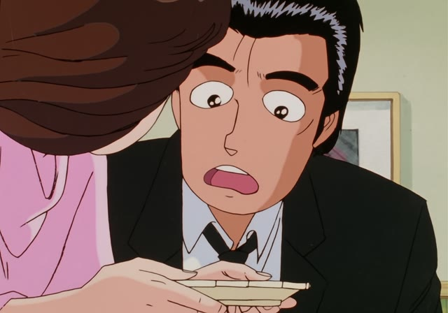
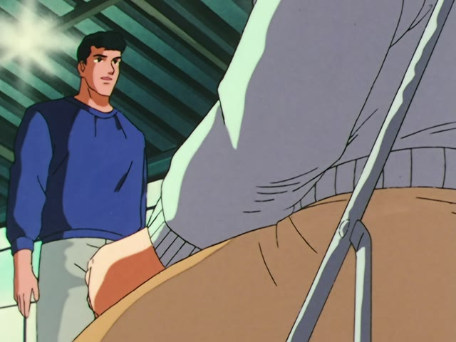
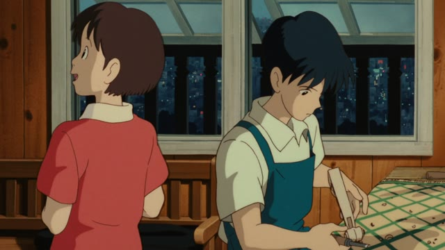
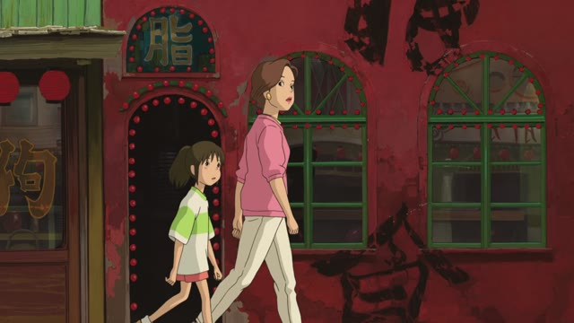
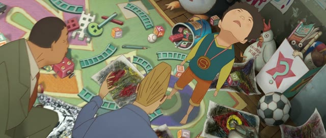

全部 (ぜんぶ)
全部 goes in one of two spots.
| Before | 全部 | After | ||
|---|---|---|---|---|
| Before the verb | ケーキを | 全部 | 食べた | ate all the cake |
| After a word | これ | 全部 | ください | all of this, please |
Legal High · Season 2, Episode 9
全部話しましたから
"[I've already] told you everything."
全部 means all, everything. Here it sits right before the verb: 全部話す, "tell everything".
On this card, a lawyer comes back to question a witness, and she says there's nothing left to tell: she told them all of it.
全部 itself never changes. Polite or casual only shows at the end: 話しました / 話した.
Shirokuma Cafe · Episode 16
さっき全部飲み干してしまった
"I already drank it all a moment ago."
全部 goes right before the verb: 全部飲み干す, "drink it all up". On this card, he badly needs water, but there's not a drop left.
Quick Examples
Your teacher asks about the homework.
宿題は全部終わりました。
"I finished all my homework."
No particle: 全部 sits right before the verb.
PoliteAt a bakery, three cakes are left in the window.
これ、全部ください。
"I'll take all of these."
これ全部: "all of this". Very common at shops.
PoliteA friend asks if you liked the book they lent you.
うん、全部読んだよ。
"Yeah, I read the whole thing."
CasualYour roommate is holding an empty pizza box.
えっ、全部食べたの？
"Wait, you ate all of it?"
CasualWith and without
ケーキを食べました。
"I ate cake." Maybe one slice.
ケーキを全部食べました。
"I ate all the cake." Nothing is left.
Examples from Media

Oishinbo · Episode 84
山岡さんの分 全部 私がいただきます
"I'll have all of Yamaoka's share."
分 (ぶん): someone's share. いただきます: a humble "I'll have".
Goblin Slayer · Episode 5
全部 ゴブリンスレイヤーさんの おかげです
"It's all thanks to you, Goblin Slayer."
～のおかげ: thanks to ___.
Kekkon Dekinai Otoko · Episode 5
これまでのデータが 全部入ってるんです
"All my data up to now is on it."
He left his design files at the hospital. 入ってる = 入っている, "is inside".

Slam Dunk · Episode 25
新入部員 全部で12名です
"Twelve new members in total."
全部で: "in total", when you count. 名 (めい): a polite counter for people.

Whisper of the Heart
あれも全部作ったの？
"Did you make all of those too?"
She's looking at the violins in his grandfather's workshop.

Spirited Away
あきれた これ全部 食べ物屋よ。
"Unbelievable. These are all restaurants."
これ全部: "all of these".
Odd Taxi · Episode 5
いや 全部欲しいんだ
"No, I want all of it."

Tekkonkinkreet
シロが全部持ってる！
"Shiro's got them all!"
持ってる = 持っている, "has".